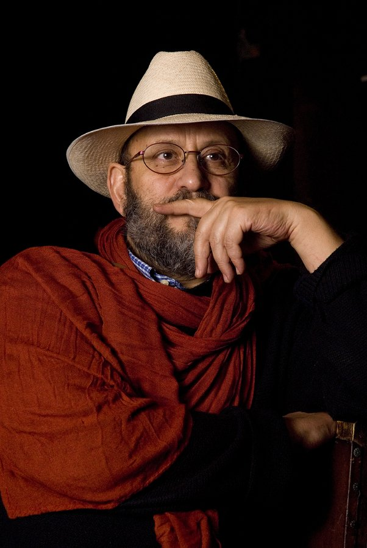
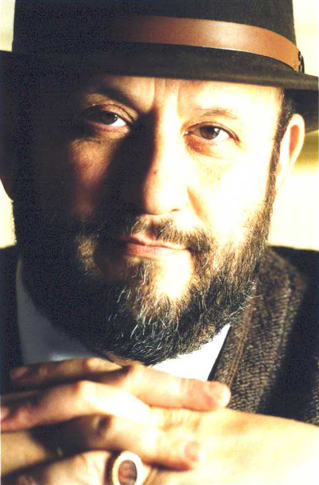

LUIGI MARÍA MUSATI
“YO NO MONTO OBRAS DE TEATRO,
YO MONTO MISAS”
Por: Cristóbal Peláez G.
Entrevista realizada en septiembre de 2008
Llegó hace una década a Colombia como parte de un intercambio teatral con la Academia Nacional de Arte Dramático Silvio D´amico, de Roma. Se sintió a gusto con nosotros y nosotros con él. Desde entonces ha realizado talleres y montajes con algunas universidades y grupos de teatro. Este hombre que tiene apariencia de senador romano encontró en Medellín su nueva casa. Siempre se irá, pero ya nunca más dejará de regresar.
Fotografía: Carlos Sanchez

Su dramaturgia y sus puestas en escena se apartan mucho de un teatro convencional.
Sí, he trabajado y dirigido siempre desde la memoria, casi toda mi dramaturgia es sobre mi ciudad, Fermo, que guarda historias muy interesantes porque es una ciudad con más de dos mil años. Cuando viví en Roma abrimos un estudio que se llamó El Cielo, éramos diez y encontramos un lugar muy grande donde quedaba una tipografía. Era el sitio más off. Con esto te quiero decir que nunca he hecho un espectáculo en un teatro convencional. Una vez intervenimos el teatro más importante de Fermo donde pusimos jaulas con conejos y gallinas en libertad, el espectáculo era sobre una leyenda de nuestro pueblo. A alguna gente no le gustó, sobre todo a un grupo de profesoras de izquierda que me decía que yo era un intelectual elitista, que ellas no habían entendido nada. Respondí que esa era la idea porque a ellas no les quería comunicar nada, que si no habían entendido era perfecto… la gente que no tiene fantasía no me interesa y si puedo provocarla lo hago, todavía lo hago. De ahí se desarrolló el concepto de dramaturgia de los espacios, de espectáculos proyectados, escritos y construidos para un lugar específico como un bosque o un acueducto romano subterráneo.
La dramaturgia de los espacios y la dramaturgia del público que usted tanto insiste.
Claro, porque cuando el público está en un lugar donde no sabe qué debe hacer –caso contrario a la comodidad del teatro convencional-, puede surgir lo inesperado, lo insólito, lo irregular. Allí la gente se desplaza, se mueve. El concepto dramatúrgico principal para mí es ese recorrido donde el espectáculo se hace diferente, tanto sicológica como físicamente, para cada espectador.
¿Por qué dice que no monta obras de teatro sino misas?
La primera vez que me di cuenta de eso fue cuando estábamos ensayando en un río y llegaron los carabineros diciendo que los había llamado el vecindario porque un grupo de tontos vestidos de negro estaban haciendo una misa negra. Claro que hago misas, no son negras porque no soy negro (se ríe), pero sí son misas. He sentido que cuando se trabaja sobre recuerdos de personas que son verdaderas, que han tenido una vida muy dura, hay que respetarlas; estás convocando a seres humanos para que puedan hablar de nuevo y también justificarse. Eso es el teatro para mí, eso era Esquilo, eso era Shakespeare, convocar las sombras para que hablen sobre la ciudad, convocar a Agamenón, convocar a Clitemnestra y preguntarles qué es el poder, qué es la democracia, qué es la relación entre un hijo y una madre… eso para mí es el teatro. Es llamar a los muertos para que nos hablen, nos ofrezcan sus puntos de vista, se justifiquen y que nosotros hoy los podamos entender, tal vez juzgarlos y hasta llegado el caso perdonarlos. En todos ellos siempre veremos historias de poder, de política, de guerra.
Y de amor. Hablemos un tanto de la relación que usted ha entablado con Colombia y en especial con Medellín.

Colombia para mí al principio fue Enrique Buenaventura que en el año 1975 fue a un festival en Italia. Fue tanto el éxito que el Teatro Oficial de Roma lo invitó a hacer una temporada. Al mismo tiempo la crítica de mi país tenía un interés especial sobre lo que pasaba en Latinoamérica y se hicieron muchos estudios, entre ellos sobre Colombia. Cuando me pidieron conectar la Academia Silvio D´amico con el Festival de Manizales y traer un espectáculo me interesó mucho la idea. Lo que pensé es que siendo teatro muy de la palabra habría una dificultad fuerte en su transmisión, entonces opté por hacer otro tipo de proyecto y nos relacionamos con la ENAD (Escuela Nacional de Arte Dramático) de Bogotá. Propuse un trabajo delirante con cinco estudiantes, Carlos Arturo Alzate trabajaba desde Bogotá y yo desde Italia, luego todos nos juntamos en Roma para terminar el montaje que presentamos en un festival italiano y posteriormente en Manizales. Para esta puesta en escena propuse el “Libro de los sueños” de Borges. Funcionó muy bien.
A usted le gusta trabajar acá con estos aborígenes…
El hecho es que si Matacandelas quedara en el Polo Sur yo iría al Polo sur. Al inicio fue Colombia, luego de conocer Matacandelas es Matacandelas; donde esté el grupo estoy yo. Con Matacandelas encontré un teatro que no conocía en Colombia y era el teatro de la palabra, me interesan los argumentos en los que trabaja, me interesa su concepto de poesía, su teatralidad sobre la memoria, me interesa el hecho que representen textos que amo, que yo hubiera querido decir, escribir. También he puesto en escena los textos de otros autores, aquellos que yo debí haber escrito. Eso es lo que se llama una afinidad electiva y me ocurrió apenas llegué. Medellín se me presentó como una ciudad muy tropical, muy colorida, muy pintoresca, muy pícara, muy mala… era la época de Pablo Escobar y me recordó un poco esa Italia de 1950 cuando yo era un niño. No sé por qué desarrollé una gran simpatía por Colombia, una parte de esta simpatía es mejor no decirla, pero la diré: había estado en Brasil y salí diciendo “no me gusta esta gente, es muy sometida, demasiado servil; acepta muy fácilmente una suerte espantosa, no se rebela nunca”, la última vez que se rebelaron fue hace 60, 70 años. Acá he visto un pueblo muy fiero que se hace respetar, que no acepta ser oprimido, reacciona muy fuerte y eso me gustó mucho, vi dignidad.
Un vínculo ha nacido entre usted y la gente de Medellín.
Si te muestro mi carta astral verás una proyección mía en todo el mundo que dice dónde mi energía se sube y dónde se deprime. Colombia es el punto más alto de mi emoción, el punto donde yo estoy mejor. Personalmente no soy muy fácil, soy bastante reservado, sé que no parece pero soy así, aquí por el contrario me viene muy fácil no ser reservado. Hay una conciencia de realidad muy fuerte en esta ciudad. En occidente las ciudades se están convirtiendo en películas, aquí está la muerte… si está la muerte está la vida, si está la vida está el sentido de que ella no debe ser desperdiciada. ¡Su valor precisamente es que es tan fácil perderla..! un accidente automovilístico, un tiro casual en la calle. Aquí no hay maquillaje. No quiere decir que en Roma no existan personas que duerman en la calle, en los últimos años sí y no es un espectáculo placentero, en todo caso, todo sucede dentro de un cuadro de vida normalizada… como un zoológico donde las contradicciones son limadas. Aquí no es así, las contradicciones son muy fuertes, aquí es necesario distinguir entre tu amigo y tu enemigo porque está en juego tu piel. Tienes que hacerlo, no hay esta ficción de amigos universales. Encuentro que aquí hay algunos valores que están muy vivos… eso me interesa.
¿Cuáles valores por ejemplo?

El sentido de la vida, la amistad, combatir por una causa común. También me parece un país muy teatral en su profunda tragedia, este es un país trágico, hay muy poco para hacer comedia, esta es una nación trágica en toda su historia, desde el inicio esto se siente muy fuerte, no hablo de la espectacularidad de la vida cotidiana, esa está en Italia, hablo de algo que de alguna manera tiene que ver con el destino de esta tierra. Hay un libro que estaba olvidando, antes que me viniera remotamente la idea de venirme para Colombia un amigo me regaló Los cortejos del diablo de Germán Espinosa y este libro me gustó mucho en la manera como estaba escrito y aquello de lo cual hablaba, Cartagena de Indias. Cuando llegué a Cartagena di vueltas con el libro para encontrarme todas las calles, subí a la Popa y pensé en Busiraco, el diablo en persona. Espinosa fue como una clavija que me abrió las puertas de Colombia. Creía que el libro era fantasía y una vez aquí me di cuenta que mucha parte de la novela era realidad.
¿Cómo percibe a los espectadores de teatro?
Me gusta que el público en Colombia y en Medellín es muy exigente, no es un público condescendiente. Viene a teatro porque quiere verlo y no porque es muy fino ir a teatro. Es exigente también porque ha visto muchas cosas. Me acuerdo que vi en Manizales un espectáculo de inauguración muy sonado, el teatro estaba lleno y después de veinte minutos la gente se salió, era terrible. En el estreno de Medea con Matacandelas estaba que me moría del susto, me preguntaba ¿cómo reaccionarán? ¿ y si se levantan y se van?
Su sensación de estas gentes de Medellín.
Aparte de la gran proliferación de tetas, que son muy amenazantes, me siento en casa, no me parece gente extraña, me parece normal, me gusta, a veces me da fastidio, me da tristeza ver la gente tirada en el piso, pero aquí hay mucha vida, mucha vida, estoy bien, muy a gusto. Con decirte que me aprendí el himno colombiano la segunda vez que vine. Lamentablemente no me gustan las arepas, terrible, espero corregirme.
Entrevista tomada de la edición No. 12 del periódico de Medellín en Escena